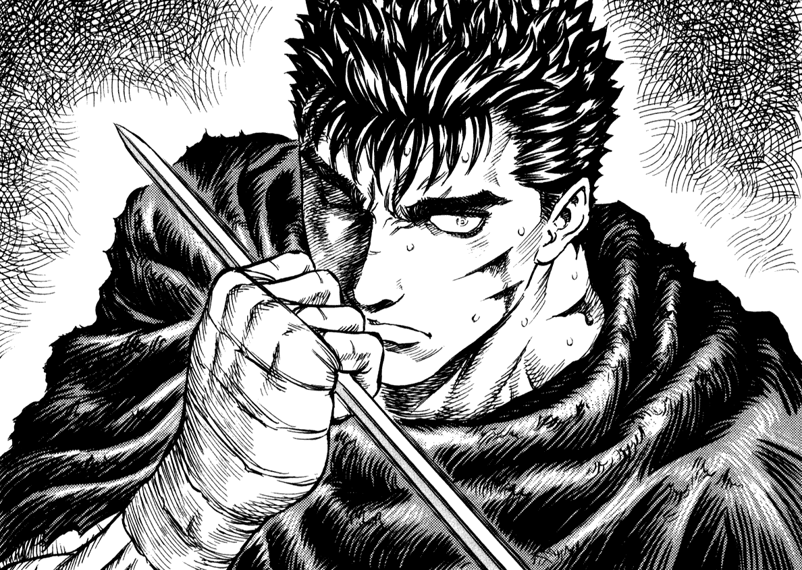
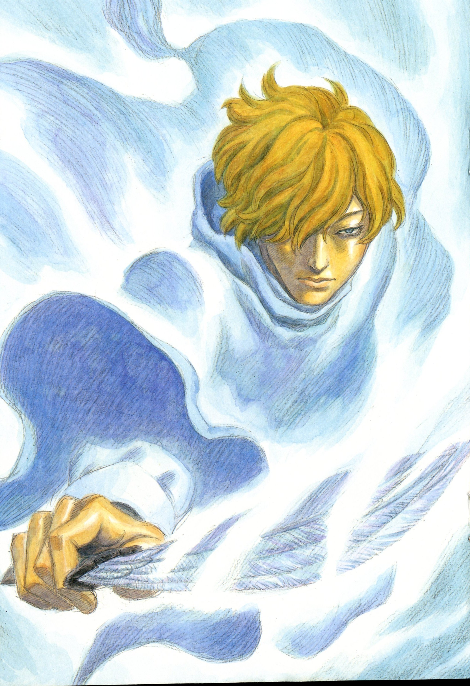
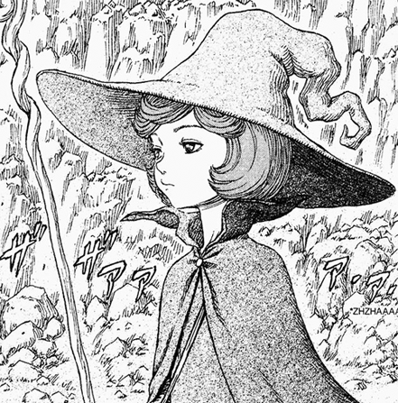
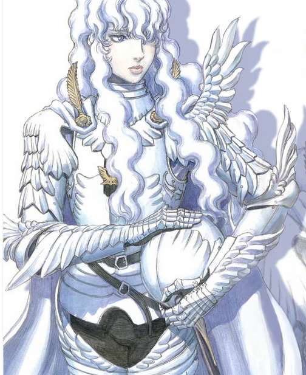
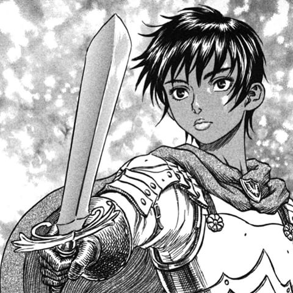
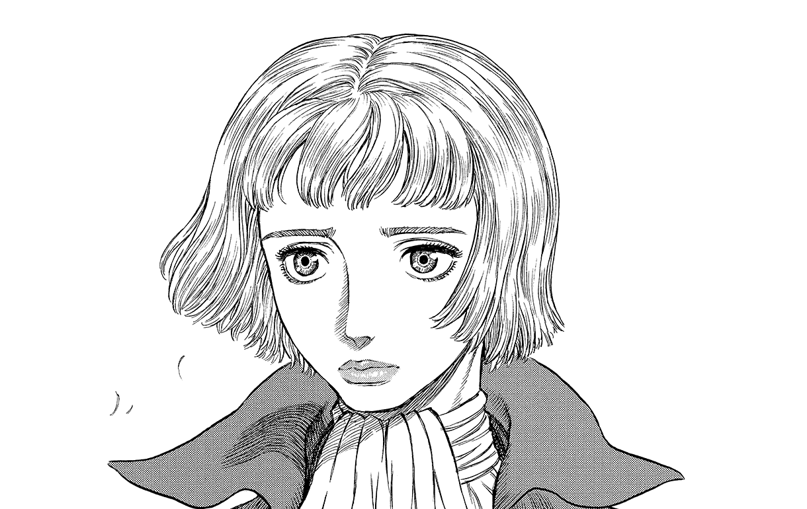

Guts, renowned by his epithet the "Black Swordsman", is a former mercenary and branded wanderer who travels the world in constant internal struggle between pursuing his own ends and protecting those dear to him.

Serpico is one of the main characters of the series. He is a servant and illegitimate son of the noble Vandimion family who would join Guts' Traveling Party along with his half-sister Farnese.

Schierke is a young 'witch-in-training', and was once a disciple of the witch Flora. She is a member of Guts' Traveling Party.

Griffith, as the leader of the previous Band of the Falcon, he and his mercenaries are able to end the Hundred-Year War and bring peace to the war-torn kingdom of Midland.

Casca is a former unit commander of the Band of the Falcon and an estranged companion of Guts.

Farnese de Vandimion is a noblewoman from the Vandimion family who led the Holy See's ceremonial guard, the Holy Iron Chain Knights. She later becomes a member of Guts' traveling party.
